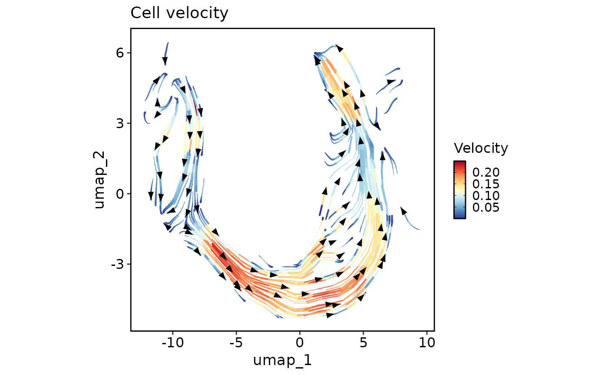
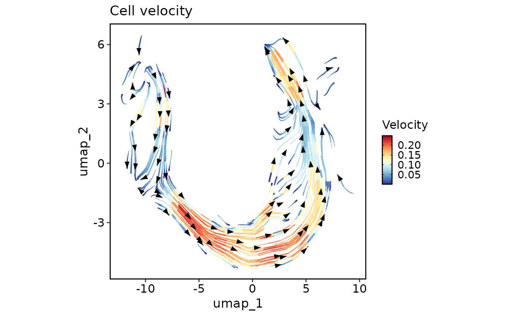

scVelo is a scalable toolkit for RNA velocity analysis in single cells. This function runs an enhanced scVelo workflow on a Seurat object with improved error handling, version compatibility, and modular design.
Usage
RunSCVELO(
srt = NULL,
assay_x = "RNA",
layer_x = "counts",
assay_y = c("spliced", "unspliced"),
layer_y = "counts",
adata = NULL,
group_by = NULL,
linear_reduction = NULL,
nonlinear_reduction = NULL,
basis = NULL,
mode = "stochastic",
fitting_by = "stochastic",
magic_impute = FALSE,
knn = 5,
t = 2,
min_shared_counts = 30,
n_pcs = 30,
n_neighbors = 30,
filter_genes = TRUE,
min_counts = 3,
min_counts_u = 3,
normalize_per_cell = TRUE,
log_transform = TRUE,
use_raw = FALSE,
diff_kinetics = FALSE,
stream_smooth = NULL,
stream_density = 2,
arrow_length = 5,
arrow_size = 5,
arrow_density = 0.5,
denoise = FALSE,
denoise_topn = 3,
kinetics = FALSE,
kinetics_topn = 100,
calculate_velocity_genes = FALSE,
compute_velocity_confidence = TRUE,
compute_terminal_states = TRUE,
compute_pseudotime = TRUE,
compute_paga = TRUE,
top_n = 6,
n_jobs = 1,
palette = "Paired",
palcolor = NULL,
show_plot = TRUE,
save = FALSE,
dpi = 300,
dirpath = "./",
fileprefix = "",
return_seurat = !is.null(srt)
)Arguments
- srt
A Seurat object.
- assay_x
Assay to convert in the anndata object.
- layer_x
Layer name for
assay_xin the Seurat object.- assay_y
Assay to convert in the anndata object.
- layer_y
Layer names for the
assay_yin the Seurat object.- adata
An anndata object.
- group_by
Variable to use for grouping cells in the Seurat object.
- linear_reduction
Linear reduction method to use, e.g.,
"PCA".- nonlinear_reduction
Non-linear reduction method to use, e.g.,
"UMAP".- basis
The basis to use for reduction, e.g.,
"UMAP".- mode
Velocity estimation models to use. Can be a vector containing
"deterministic","stochastic", and/or"dynamical".- fitting_by
Method used to fit gene velocities for dynamical modeling, e.g., "stochastic".
- magic_impute
Flag indicating whether to perform magic imputation.
- knn
The number of nearest neighbors for
magic.MAGIC.- t
power to which the diffusion operator is powered for
magic.MAGIC.Minimum number of counts (both unspliced and spliced) required for a gene.
- n_pcs
Number of principal components (PCs) used for velocity estimation.
- n_neighbors
Number of nearest neighbors used for velocity estimation.
- filter_genes
Whether to filter genes based on minimum counts.
- min_counts
Minimum counts for gene filtering.
- min_counts_u
Minimum unspliced counts for gene filtering.
- normalize_per_cell
Whether to normalize counts per cell.
- log_transform
Whether to apply log transformation.
- use_raw
Whether to use raw data for dynamical modeling.
- diff_kinetics
Whether to use differential kinetics.
- stream_smooth
Multiplication factor for scale in Gaussian kernel around grid point.
- stream_density
Controls the closeness of streamlines. When density = 2 (default), the domain is divided into a 60x60 grid, whereas density linearly scales this grid. Each cell in the grid can have, at most, one traversing streamline.
- arrow_length
Length of arrows.
- arrow_size
Size of arrows.
- arrow_density
Amount of velocities to show.
- denoise
Boolean flag indicating whether to denoise.
- denoise_topn
Number of genes with highest likelihood selected to infer velocity directions.
- kinetics
Boolean flag indicating whether to estimate RNA kinetics.
- kinetics_topn
Number of genes with highest likelihood selected to infer velocity directions.
- calculate_velocity_genes
Boolean flag indicating whether to calculate velocity genes.
- compute_velocity_confidence
Whether to compute velocity confidence metrics.
- compute_terminal_states
Whether to compute terminal states (root and end points).
- compute_pseudotime
Whether to compute velocity pseudotime.
- compute_paga
Whether to compute PAGA (Partition-based graph abstraction).
- top_n
The number of top features to plot.
- n_jobs
The number of parallel jobs to run.
- palette
The palette to use for coloring cells.
- palcolor
A vector of colors to use as the palette.
- show_plot
Whether to show the plot.
- save
Whether to save the plots.
- dpi
The DPI (dots per inch) for saving the plot.
- dirpath
The directory to save the plots.
- fileprefix
The file prefix to use for the plots.
- return_seurat
Whether to return a Seurat object instead of an anndata object. Default is
TRUE.
Examples
PrepareEnv()
#> ℹ [2025-09-13 07:35:23] Preparing scop Python Environment
#> ℹ [2025-09-13 07:35:23] Environment name: scop_env
#> ℹ [2025-09-13 07:35:23] Python version: 3.10-1
#> ℹ [2025-09-13 07:35:23] Number of packages to install: 21
#> ℹ [2025-09-13 07:35:23] Auto-detecting conda...
#> ℹ [2025-09-13 07:35:24] Using existing environment: /usr/share/miniconda/envs/scop_env
#> ℹ [2025-09-13 07:35:24] Checking and installing required packages...
#> ℹ [2025-09-13 07:35:24] Installing conda packages
#> ℹ [2025-09-13 07:35:25] Checking 3 packages in environment: scop_env
#> ℹ [2025-09-13 07:35:26] Retrieving package list for environment: scop_env
#> ℹ [2025-09-13 07:35:28] Found 194 packages installed
#> ✔ [2025-09-13 07:35:28] leidenalg 0.10.2
#> ✔ [2025-09-13 07:35:28] tbb 2022.2.0
#> ✔ [2025-09-13 07:35:28] python-igraph 0.11.9
#> ℹ [2025-09-13 07:35:28] Installing pip packages
#> ℹ [2025-09-13 07:35:29] Checking 18 packages in environment: scop_env
#> ℹ [2025-09-13 07:35:30] Retrieving package list for environment: scop_env
#> ℹ [2025-09-13 07:35:32] Found 194 packages installed
#> ✔ [2025-09-13 07:35:32] matplotlib 3.10.3
#> ✔ [2025-09-13 07:35:32] numba 0.59.1
#> ✔ [2025-09-13 07:35:32] llvmlite 0.42.0
#> ✔ [2025-09-13 07:35:32] numpy 1.26.4
#> ✔ [2025-09-13 07:35:32] palantir 1.4.1
#> ✔ [2025-09-13 07:35:32] pandas 2.0.3
#> ✔ [2025-09-13 07:35:32] scanpy 1.11.3
#> ✔ [2025-09-13 07:35:32] scikit-learn 1.7.0
#> ✔ [2025-09-13 07:35:32] scipy 1.15.3
#> ✔ [2025-09-13 07:35:32] scvelo 0.3.3
#> ✔ [2025-09-13 07:35:32] wot 1.0.8.post2
#> ✔ [2025-09-13 07:35:32] trimap 1.1.4
#> ✔ [2025-09-13 07:35:32] pacmap 0.8.0
#> ✔ [2025-09-13 07:35:32] phate 1.0.11
#> ✔ [2025-09-13 07:35:32] bbknn 1.6.0
#> ✔ [2025-09-13 07:35:32] scanorama 1.7.4
#> ✔ [2025-09-13 07:35:32] scvi-tools 1.2.1
#> ✔ [2025-09-13 07:35:32] cellrank 2.0.7
#> ✔ [2025-09-13 07:35:34] Python Environment Ready
#> conda environment:
#> conda: /usr/share/miniconda/bin/conda
#> environment: /usr/share/miniconda/envs/scop_env
#> python config:
#> python: /usr/share/miniconda/envs/scop_env/bin/python3.10
#> libpython: /usr/share/miniconda/envs/scop_env/lib/libpython3.10.so
#> pythonhome: /usr/share/miniconda/envs/scop_env:/usr/share/miniconda/envs/scop_env
#> version: 3.10.1 | packaged by conda-forge | (main, Dec 22 2021, 01:39:36) [GCC 9.4.0]
#> numpy: /usr/share/miniconda/envs/scop_env/lib/python3.10/site-packages/numpy
#> numpy_version: 1.26.4
#>
#> NOTE: Python version was forced by use_python() function
data(pancreas_sub)
pancreas_sub <- standard_scop(pancreas_sub)
#> ℹ [2025-09-13 07:35:35] Start standard scop workflow...
#> ℹ [2025-09-13 07:35:36] Checking a list of <Seurat> object...
#> ! [2025-09-13 07:35:36] Data 1/1 of the `srt_list` is "unknown"
#> ℹ [2025-09-13 07:35:36] Perform `NormalizeData()` with `normalization.method = 'LogNormalize'` on the data 1/1 of the `srt_list`...
#> ℹ [2025-09-13 07:35:38] Perform `Seurat::FindVariableFeatures()` on the data 1/1 of the `srt_list`...
#> ℹ [2025-09-13 07:35:38] Use the separate HVF from srt_list
#> ℹ [2025-09-13 07:35:39] Number of available HVF: 2000
#> ℹ [2025-09-13 07:35:39] Finished check
#> ℹ [2025-09-13 07:35:39] Perform `Seurat::ScaleData()` on the data...
#> Warning: Different features in new layer data than already exists for scale.data
#> ℹ [2025-09-13 07:35:39] Perform pca linear dimension reduction on the data...
#> StandardPC_ 1
#> Positive: Aplp1, Cpe, Gnas, Fam183b, Map1b, Hmgn3, Pcsk1n, Chga, Tuba1a, Bex2
#> Syt13, Isl1, 1700086L19Rik, Pax6, Chgb, Scgn, Rbp4, Scg3, Gch1, Camk2n1
#> Cryba2, Pcsk2, Pyy, Tspan7, Mafb, Hist3h2ba, Dbpht2, Abcc8, Rap1b, Slc38a5
#> Negative: Spp1, Anxa2, Sparc, Dbi, 1700011H14Rik, Wfdc2, Gsta3, Adamts1, Clu, Mgst1
#> Bicc1, Ldha, Vim, Cldn3, Cyr61, Rps2, Mt1, Ptn, Phgdh, Nudt19
#> Smtnl2, Smco4, Habp2, Mt2, Col18a1, Rpl12, Galk1, Cldn10, Acot1, Ccnd1
#> StandardPC_ 2
#> Positive: Rbp4, Tagln2, Tuba1b, Fkbp2, Pyy, Pcsk2, Iapp, Tmem27, Meis2, Tubb4b
#> Pcsk1n, Dbpht2, Rap1b, Dynll1, Tubb2a, Sdf2l1, Scgn, 1700086L19Rik, Scg2, Abcc8
#> Atp1b1, Hspa5, Fam183b, Papss2, Slc38a5, Scg3, Mageh1, Tspan7, Ppp1r1a, Ociad2
#> Negative: Neurog3, Btbd17, Gadd45a, Ppp1r14a, Neurod2, Sox4, Smarcd2, Mdk, Pax4, Btg2
#> Sult2b1, Hes6, Grasp, Igfbpl1, Gpx2, Cbfa2t3, Foxa3, Shf, Mfng, Tmsb4x
#> Amotl2, Gdpd1, Cdc14b, Epb42, Rcor2, Cotl1, Upk3bl, Rbfox3, Cldn6, Cer1
#> StandardPC_ 3
#> Positive: Nusap1, Top2a, Birc5, Aurkb, Cdca8, Pbk, Mki67, Tpx2, Plk1, Ccnb1
#> 2810417H13Rik, Incenp, Cenpf, Ccna2, Prc1, Racgap1, Cdk1, Aurka, Cdca3, Hmmr
#> Spc24, Kif23, Sgol1, Cenpe, Cdc20, Hist1h1b, Cdca2, Mxd3, Kif22, Ska1
#> Negative: Anxa5, Pdzk1ip1, Acot1, Tpm1, Anxa2, Dcdc2a, Capg, Sparc, Ttr, Pamr1
#> Clu, Cxcl12, Ndrg2, Hnf1aos1, Gas6, Gsta3, Krt18, Ces1d, Atp1b1, Muc1
#> Hhex, Acadm, Spp1, Enpp2, Bcl2l14, Sat1, Smtnl2, 1700011H14Rik, Tgm2, Fam159a
#> StandardPC_ 4
#> Positive: Glud1, Tm4sf4, Akr1c19, Cldn4, Runx1t1, Fev, Pou3f4, Gm43861, Pgrmc1, Arx
#> Cd200, Lrpprc, Hmgn3, Ppp1r14c, Pam, Etv1, Tsc22d1, Slc25a5, Akap17b, Pgf
#> Fam43a, Emb, Jun, Krt8, Dnajc12, Mid1ip1, Ids, Rgs17, Uchl1, Alcam
#> Negative: Ins2, Ins1, Ppp1r1a, Nnat, Calr, Sytl4, Sdf2l1, Iapp, Pdia6, Mapt
#> G6pc2, C2cd4b, Npy, Gng12, P2ry1, Ero1lb, Adra2a, Papss2, Arhgap36, Fam151a
#> Dlk1, Creld2, Gip, Tmem215, Gm27033, Cntfr, Prss53, C2cd4a, Lyve1, Ociad2
#> StandardPC_ 5
#> Positive: Pdx1, Nkx6-1, Npepl1, Cldn4, Cryba2, Fev, Jun, Chgb, Gng12, Adra2a
#> Mnx1, Sytl4, Pdk3, Gm27033, Nnat, Chga, Ins2, 1110012L19Rik, Enho, Krt7
#> Mlxipl, Tmsb10, Flrt1, Pax4, Tubb3, Prrg2, Gars, Frzb, BC023829, Gm2694
#> Negative: Irx2, Irx1, Gcg, Ctxn2, Tmem27, Ctsz, Tmsb15l, Nap1l5, Pou6f2, Gria2
#> Ghrl, Peg10, Smarca1, Arx, Lrpap1, Rgs4, Ttr, Gast, Tmsb15b2, Serpina1b
#> Slc16a10, Wnk3, Ly6e, Auts2, Sct, Arg1, Dusp10, Sphkap, Dock11, Edn3
#> ℹ [2025-09-13 07:35:40] Perform `Seurat::FindClusters()` with louvain and `cluster_resolution` = 0.6 on the data...
#> ℹ [2025-09-13 07:35:40] Reorder clusters...
#> ! [2025-09-13 07:35:40] Using `Seurat::AggregateExpression()` to calculate pseudo-bulk data for <Assay5>
#> ℹ [2025-09-13 07:35:40] Perform umap nonlinear dimension reduction on the data...
#> ℹ [2025-09-13 07:35:40] Non-linear dimensionality reduction (umap) using (Standardpca) dims (1-50) as input
#> ℹ [2025-09-13 07:35:40] UMAP will return its model
#> 07:35:40 UMAP embedding parameters a = 0.9922 b = 1.112
#> 07:35:40 Read 1000 rows and found 50 numeric columns
#> 07:35:40 Using Annoy for neighbor search, n_neighbors = 30
#> 07:35:40 Building Annoy index with metric = cosine, n_trees = 50
#> 0% 10 20 30 40 50 60 70 80 90 100%
#> [----|----|----|----|----|----|----|----|----|----|
#> *
#> *
#> *
#> *
#> *
#> *
#> *
#> *
#> *
#> *
#> *
#> *
#> *
#> *
#> *
#> *
#> *
#> *
#> *
#> *
#> *
#> *
#> *
#> *
#> *
#> *
#> *
#> *
#> *
#> *
#> *
#> *
#> *
#> *
#> *
#> *
#> *
#> *
#> *
#> *
#> *
#> *
#> *
#> *
#> *
#> *
#> *
#> *
#> *
#> *
#> |
#> 07:35:41 Writing NN index file to temp file /tmp/RtmpATKt2U/file2325455a8f4d
#> 07:35:41 Searching Annoy index using 2 threads, search_k = 3000
#> 07:35:41 Annoy recall = 100%
#> 07:35:42 Commencing smooth kNN distance calibration using 2 threads
#> with target n_neighbors = 30
#> 07:35:43 Initializing from normalized Laplacian + noise (using RSpectra)
#> 07:35:43 Commencing optimization for 200 epochs, with 39304 positive edges
#> 07:35:43 Using rng type: pcg
#> 07:35:45 Optimization finished
#> ℹ [2025-09-13 07:35:45] Non-linear dimensionality reduction (umap) using (Standardpca) dims (1-50) as input
#> ℹ [2025-09-13 07:35:45] UMAP will return its model
#> 07:35:45 UMAP embedding parameters a = 0.9922 b = 1.112
#> 07:35:45 Read 1000 rows and found 50 numeric columns
#> 07:35:45 Using Annoy for neighbor search, n_neighbors = 30
#> 07:35:45 Building Annoy index with metric = cosine, n_trees = 50
#> 0% 10 20 30 40 50 60 70 80 90 100%
#> [----|----|----|----|----|----|----|----|----|----|
#> *
#> *
#> *
#> *
#> *
#> *
#> *
#> *
#> *
#> *
#> *
#> *
#> *
#> *
#> *
#> *
#> *
#> *
#> *
#> *
#> *
#> *
#> *
#> *
#> *
#> *
#> *
#> *
#> *
#> *
#> *
#> *
#> *
#> *
#> *
#> *
#> *
#> *
#> *
#> *
#> *
#> *
#> *
#> *
#> *
#> *
#> *
#> *
#> *
#> *
#> |
#> 07:35:45 Writing NN index file to temp file /tmp/RtmpATKt2U/file23255278821f
#> 07:35:45 Searching Annoy index using 2 threads, search_k = 3000
#> 07:35:45 Annoy recall = 100%
#> 07:35:47 Commencing smooth kNN distance calibration using 2 threads
#> with target n_neighbors = 30
#> 07:35:48 Initializing from normalized Laplacian + noise (using RSpectra)
#> 07:35:48 Commencing optimization for 200 epochs, with 39304 positive edges
#> 07:35:48 Using rng type: pcg
#> 07:35:50 Optimization finished
#> ✔ [2025-09-13 07:35:50] Run scop standard workflow done
pancreas_sub <- RunSCVELO(
pancreas_sub,
assay_x = "RNA",
group_by = "SubCellType",
linear_reduction = "PCA",
nonlinear_reduction = "UMAP"
)
#> ℹ [2025-09-13 07:35:51] Checking 1 packages in environment: scop_env
#> ℹ [2025-09-13 07:35:52] Retrieving package list for environment: scop_env
#> ℹ [2025-09-13 07:35:54] Found 194 packages installed
#> ✔ [2025-09-13 07:35:54] scvelo version: 0.3.3
#> ℹ [2025-09-13 07:35:55] Checking 2 packages in environment: scop_env
#> ℹ [2025-09-13 07:35:56] Retrieving package list for environment: scop_env
#> ℹ [2025-09-13 07:35:58] Found 194 packages installed
#> ✔ [2025-09-13 07:35:58] scanpy version: 1.11.3
#> ✔ [2025-09-13 07:35:58] numpy version: 1.26.4
#> ℹ [2025-09-13 07:35:58] Converting <Seurat> to <AnnData> ...
#> ! [2025-09-13 07:35:58] "misc" slot is not converted
#> ! [2025-09-13 07:35:58] "tools" slot is not converted
#> ✔ [2025-09-13 07:35:58] Convert <Seurat> object to <AnnData> object completed
#> ℹ [2025-09-13 07:35:58] Running scVelo analysis...
#> ✔ [2025-09-13 07:36:04] scVelo analysis completed
#> ℹ [2025-09-13 07:36:04] Converting <AnnData> object to <Seurat> object...
#> ✔ [2025-09-13 07:36:07] Convert <AnnData> object to <Seurat> object completed
#> Warning: Different features in new layer data than already exists for counts
#> Warning: Different features in new layer data than already exists for data
head(pancreas_sub[[]])
#> orig.ident nCount_RNA nFeature_RNA S_score G2M_score
#> AAACCTGAGCCTTGAT SeuratProject 7071 2613 -0.01470664 -0.2326104
#> AAACCTGGTAAGTGGC SeuratProject 5026 2211 -0.17998111 -0.1260295
#> AAACGGGAGATATGGT SeuratProject 6194 2486 -0.16794573 -0.1666881
#> AAACGGGCAAAGAATC SeuratProject 6370 2581 -0.17434505 -0.2216024
#> AAACGGGGTACAGTTC SeuratProject 9182 2906 -0.18656224 -0.1571970
#> AAACGGGTCAGCTCTC SeuratProject 5892 2282 -0.12347911 -0.2298337
#> nCount_spliced nFeature_spliced nCount_unspliced
#> AAACCTGAGCCTTGAT 7071 2613 953
#> AAACCTGGTAAGTGGC 5026 2211 1000
#> AAACGGGAGATATGGT 6194 2486 721
#> AAACGGGCAAAGAATC 6370 2581 1544
#> AAACGGGGTACAGTTC 9182 2906 2262
#> AAACGGGTCAGCTCTC 5892 2282 935
#> nFeature_unspliced CellType SubCellType Phase
#> AAACCTGAGCCTTGAT 638 Ductal Ductal G1
#> AAACCTGGTAAGTGGC 623 Ngn3-high-EP Ngn3-high-EP G1
#> AAACGGGAGATATGGT 550 Ductal Ductal G1
#> AAACGGGCAAAGAATC 1015 Endocrine Beta G1
#> AAACGGGGTACAGTTC 1096 Endocrine Beta G1
#> AAACGGGTCAGCTCTC 712 Ngn3-low-EP Ngn3-low-EP G1
#> Standardpca_SNN_res.0.6 ident Standardpcaclusters
#> AAACCTGAGCCTTGAT 0 <NA> <NA>
#> AAACCTGGTAAGTGGC 3 <NA> <NA>
#> AAACGGGAGATATGGT 0 <NA> <NA>
#> AAACGGGCAAAGAATC 1 <NA> <NA>
#> AAACGGGGTACAGTTC 1 <NA> <NA>
#> AAACGGGTCAGCTCTC 0 <NA> <NA>
#> Standardclusters initial_size_unspliced initial_size_spliced
#> AAACCTGAGCCTTGAT <NA> 953 7071
#> AAACCTGGTAAGTGGC <NA> 1000 5026
#> AAACGGGAGATATGGT <NA> 721 6194
#> AAACGGGCAAAGAATC <NA> 1544 6370
#> AAACGGGGTACAGTTC <NA> 2262 9182
#> AAACGGGTCAGCTCTC <NA> 935 5892
#> initial_size n_counts stochastic_self_transition
#> AAACCTGAGCCTTGAT 7071 5557.081 3.088521e-01
#> AAACCTGGTAAGTGGC 5026 5521.244 1.283474e-01
#> AAACGGGAGATATGGT 6194 5591.387 1.607823e-01
#> AAACGGGCAAAGAATC 6370 5563.226 1.589271e-01
#> AAACGGGGTACAGTTC 9182 5618.999 1.558661e-05
#> AAACGGGTCAGCTCTC 5892 5544.945 1.397027e-01
#> stochastic_length stochastic_confidence
#> AAACCTGAGCCTTGAT 4.39 0.8236299
#> AAACCTGGTAAGTGGC 13.37 0.9523554
#> AAACGGGAGATATGGT 5.94 0.8664176
#> AAACGGGCAAAGAATC 5.56 0.6425864
#> AAACGGGGTACAGTTC 31.12 0.9922326
#> AAACGGGTCAGCTCTC 7.09 0.7898204
#> stochastic_confidence_transition stochastic_root_cells
#> AAACCTGAGCCTTGAT 0.07636669 0
#> AAACCTGGTAAGTGGC 0.22660273 0
#> AAACGGGAGATATGGT 0.16279691 0
#> AAACGGGCAAAGAATC 0.31432876 0
#> AAACGGGGTACAGTTC 0.91638625 0
#> AAACGGGTCAGCTCTC 0.17698289 0
#> stochastic_end_points stochastic_pseudotime nCount_Ms
#> AAACCTGAGCCTTGAT 2.649858e-03 0.1353906 5574.122
#> AAACCTGGTAAGTGGC 2.463039e-05 0.7681831 5535.907
#> AAACGGGAGATATGGT 1.552235e-03 0.1487381 5563.701
#> AAACGGGCAAAGAATC 7.212214e-05 0.9486359 5533.869
#> AAACGGGGTACAGTTC 4.176336e-01 0.9009965 5564.412
#> AAACGGGTCAGCTCTC 1.074514e-03 0.1452119 5558.879
#> nFeature_Ms nCount_Mu nFeature_Mu nCount_velocity
#> AAACCTGAGCCTTGAT 9224 1181.493 7679 154.04584
#> AAACCTGGTAAGTGGC 7684 1185.507 6079 50.20667
#> AAACGGGAGATATGGT 8948 1181.818 7174 194.47365
#> AAACGGGCAAAGAATC 8554 1185.836 7220 -30.74317
#> AAACGGGGTACAGTTC 9018 1184.744 7896 -39.84477
#> AAACGGGTCAGCTCTC 8171 1183.398 5673 205.13576
#> nFeature_velocity nCount_variance_velocity
#> AAACCTGAGCCTTGAT 4127 32.604618
#> AAACCTGGTAAGTGGC 3460 -2.177535
#> AAACGGGAGATATGGT 4137 32.813191
#> AAACGGGCAAAGAATC 3685 -85.936140
#> AAACGGGGTACAGTTC 3515 -633.498995
#> AAACGGGTCAGCTCTC 3746 48.939999
#> nFeature_variance_velocity nCount_stochastic
#> AAACCTGAGCCTTGAT 349 154.04584
#> AAACCTGGTAAGTGGC 195 50.20667
#> AAACGGGAGATATGGT 304 194.47365
#> AAACGGGCAAAGAATC 227 -30.74317
#> AAACGGGGTACAGTTC 314 -39.84477
#> AAACGGGTCAGCTCTC 252 205.13576
#> nFeature_stochastic nCount_variance_stochastic
#> AAACCTGAGCCTTGAT 4127 32.604618
#> AAACCTGGTAAGTGGC 3460 -2.177535
#> AAACGGGAGATATGGT 4137 32.813191
#> AAACGGGCAAAGAATC 3685 -85.936140
#> AAACGGGGTACAGTTC 3515 -633.498995
#> AAACGGGTCAGCTCTC 3746 48.939999
#> nFeature_variance_stochastic
#> AAACCTGAGCCTTGAT 349
#> AAACCTGGTAAGTGGC 195
#> AAACGGGAGATATGGT 304
#> AAACGGGCAAAGAATC 227
#> AAACGGGGTACAGTTC 314
#> AAACGGGTCAGCTCTC 252
names(pancreas_sub@assays)
#> [1] "RNA" "spliced" "unspliced"
#> [4] "Ms" "Mu" "velocity"
#> [7] "variance_velocity" "stochastic" "variance_stochastic"
FeatureDimPlot(
pancreas_sub,
c("stochastic_length", "stochastic_confidence")
)
FeatureDimPlot(
pancreas_sub,
"stochastic_pseudotime"
)
 VelocityPlot(
pancreas_sub,
reduction = "UMAP",
plot_type = "stream"
)
#> ℹ [2025-09-13 07:36:12] Installing package: metR...
#>
#> ✔ All system requirements are already installed.
#>
#> ℹ No downloads are needed
#> ℹ Installing system requirements
#> ℹ Executing `sudo sh -c apt-get -y update`
#> Get:1 file:/etc/apt/apt-mirrors.txt Mirrorlist [144 B]
#> Hit:2 http://azure.archive.ubuntu.com/ubuntu noble InRelease
#> Hit:6 https://packages.microsoft.com/repos/azure-cli noble InRelease
#> Hit:3 http://azure.archive.ubuntu.com/ubuntu noble-updates InRelease
#> Hit:4 http://azure.archive.ubuntu.com/ubuntu noble-backports InRelease
#> Hit:7 https://packages.microsoft.com/ubuntu/24.04/prod noble InRelease
#> Hit:5 http://azure.archive.ubuntu.com/ubuntu noble-security InRelease
#> Reading package lists...
#> ℹ Executing `sudo sh -c apt-get -y install libabsl-dev cmake libssl-dev libgdal-dev gdal-bin libgeos-dev libproj-dev libsqlite3-dev libicu-dev libudunits2-dev`
#> Reading package lists...
#> Building dependency tree...
#> Reading state information...
#> libabsl-dev is already the newest version (20220623.1-3.1ubuntu3.2).
#> cmake is already the newest version (3.28.3-1build7).
#> libssl-dev is already the newest version (3.0.13-0ubuntu3.5).
#> libgdal-dev is already the newest version (3.8.4+dfsg-3ubuntu3).
#> gdal-bin is already the newest version (3.8.4+dfsg-3ubuntu3).
#> libgeos-dev is already the newest version (3.12.1-3build1).
#> libproj-dev is already the newest version (9.4.0-1build2).
#> libsqlite3-dev is already the newest version (3.45.1-1ubuntu2.4).
#> libicu-dev is already the newest version (74.2-1ubuntu3.1).
#> libudunits2-dev is already the newest version (2.2.28-7build1).
#> 0 upgraded, 0 newly installed, 0 to remove and 16 not upgraded.
#> ✔ 1 pkg + 46 deps: kept 46 [3s]
#> ℹ [2025-09-13 07:36:15] All packages installed successfully
#> ℹ [2025-09-13 07:36:15] Installing package: metR...
#>
#> ✔ All system requirements are already installed.
#>
#> ℹ No downloads are needed
#> ℹ Installing system requirements
#> ℹ Executing `sudo sh -c apt-get -y update`
#> Get:1 file:/etc/apt/apt-mirrors.txt Mirrorlist [144 B]
#> Hit:2 http://azure.archive.ubuntu.com/ubuntu noble InRelease
#> Hit:3 http://azure.archive.ubuntu.com/ubuntu noble-updates InRelease
#> Hit:4 http://azure.archive.ubuntu.com/ubuntu noble-backports InRelease
#> Hit:5 http://azure.archive.ubuntu.com/ubuntu noble-security InRelease
#> Hit:6 https://packages.microsoft.com/repos/azure-cli noble InRelease
#> Hit:7 https://packages.microsoft.com/ubuntu/24.04/prod noble InRelease
#> Reading package lists...
#> ℹ Executing `sudo sh -c apt-get -y install libabsl-dev cmake libssl-dev libgdal-dev gdal-bin libgeos-dev libproj-dev libsqlite3-dev libicu-dev libudunits2-dev`
#> Reading package lists...
#> Building dependency tree...
#> Reading state information...
#> libabsl-dev is already the newest version (20220623.1-3.1ubuntu3.2).
#> cmake is already the newest version (3.28.3-1build7).
#> libssl-dev is already the newest version (3.0.13-0ubuntu3.5).
#> libgdal-dev is already the newest version (3.8.4+dfsg-3ubuntu3).
#> gdal-bin is already the newest version (3.8.4+dfsg-3ubuntu3).
#> libgeos-dev is already the newest version (3.12.1-3build1).
#> libproj-dev is already the newest version (9.4.0-1build2).
#> libsqlite3-dev is already the newest version (3.45.1-1ubuntu2.4).
#> libicu-dev is already the newest version (74.2-1ubuntu3.1).
#> libudunits2-dev is already the newest version (2.2.28-7build1).
#> 0 upgraded, 0 newly installed, 0 to remove and 16 not upgraded.
#> ✔ 1 pkg + 46 deps: kept 46 [3s]
#> ℹ [2025-09-13 07:36:18] All packages installed successfully

CellDimPlot(
pancreas_sub,
group.by = "SubCellType",
reduction = "UMAP",
pt.size = NA,
velocity = "stochastic"
)
#> ℹ [2025-09-13 07:36:19] Installing package: metR...
#>
#> ✔ All system requirements are already installed.
#>
#> ℹ No downloads are needed
#> ℹ Installing system requirements
#> ℹ Executing `sudo sh -c apt-get -y update`
#> Get:1 file:/etc/apt/apt-mirrors.txt Mirrorlist [144 B]
#> Hit:2 http://azure.archive.ubuntu.com/ubuntu noble InRelease
#> Hit:6 https://packages.microsoft.com/repos/azure-cli noble InRelease
#> Hit:7 https://packages.microsoft.com/ubuntu/24.04/prod noble InRelease
#> Hit:3 http://azure.archive.ubuntu.com/ubuntu noble-updates InRelease
#> Hit:4 http://azure.archive.ubuntu.com/ubuntu noble-backports InRelease
#> Hit:5 http://azure.archive.ubuntu.com/ubuntu noble-security InRelease
#> Reading package lists...
#> ℹ Executing `sudo sh -c apt-get -y install libabsl-dev cmake libssl-dev libgdal-dev gdal-bin libgeos-dev libproj-dev libsqlite3-dev libicu-dev libudunits2-dev`
#> Reading package lists...
#> Building dependency tree...
#> Reading state information...
#> libabsl-dev is already the newest version (20220623.1-3.1ubuntu3.2).
#> cmake is already the newest version (3.28.3-1build7).
#> libssl-dev is already the newest version (3.0.13-0ubuntu3.5).
#> libgdal-dev is already the newest version (3.8.4+dfsg-3ubuntu3).
#> gdal-bin is already the newest version (3.8.4+dfsg-3ubuntu3).
#> libgeos-dev is already the newest version (3.12.1-3build1).
#> libproj-dev is already the newest version (9.4.0-1build2).
#> libsqlite3-dev is already the newest version (3.45.1-1ubuntu2.4).
#> libicu-dev is already the newest version (74.2-1ubuntu3.1).
#> libudunits2-dev is already the newest version (2.2.28-7build1).
#> 0 upgraded, 0 newly installed, 0 to remove and 16 not upgraded.
#> ✔ 1 pkg + 46 deps: kept 46 [3s]
#> ℹ [2025-09-13 07:36:22] All packages installed successfully
#> Warning: No shared levels found between `names(values)` of the manual scale and the
#> data's fill values.
#> Warning: Removed 1000 rows containing missing values or values outside the scale range
#> (`geom_point()`).
#> Warning: No shared levels found between `names(values)` of the manual scale and the
#> data's fill values.
#> Warning: Removed 1000 rows containing missing values or values outside the scale range
#> (`geom_point()`).
#> Warning: Removed 3 rows containing missing values or values outside the scale range
#> (`geom_segment()`).
data(pancreas_sub)
pancreas_sub <- standard_scop(pancreas_sub)
#> ℹ [2025-09-13 07:36:22] Start standard scop workflow...
#> ℹ [2025-09-13 07:36:22] Checking a list of <Seurat> object...
#> ! [2025-09-13 07:36:23] Data 1/1 of the `srt_list` is "unknown"
#> ℹ [2025-09-13 07:36:23] Perform `NormalizeData()` with `normalization.method = 'LogNormalize'` on the data 1/1 of the `srt_list`...
#> Warning: Different features in new layer data than already exists for scale.data
#> ℹ [2025-09-13 07:36:25] Perform `Seurat::FindVariableFeatures()` on the data 1/1 of the `srt_list`...
#> Warning: NaNs produced
#> Warning: number of items to replace is not a multiple of replacement length
#> ℹ [2025-09-13 07:36:25] Use the separate HVF from srt_list
#> ℹ [2025-09-13 07:36:25] Number of available HVF: 2000
#> ℹ [2025-09-13 07:36:25] Finished check
#> ℹ [2025-09-13 07:36:25] Perform `Seurat::ScaleData()` on the data...
#> Warning: Different features in new layer data than already exists for scale.data
#> ℹ [2025-09-13 07:36:26] Perform pca linear dimension reduction on the data...
#> Error: None of the requested features have any variance
pancreas_sub <- RunSCVELO(
pancreas_sub,
assay_x = "RNA",
group_by = "SubCellType",
linear_reduction = "PCA",
nonlinear_reduction = "UMAP",
mode = c("deterministic", "stochastic"),
filter_genes = TRUE,
min_counts = 5,
compute_velocity_confidence = TRUE,
compute_terminal_states = TRUE,
compute_pseudotime = TRUE,
compute_paga = TRUE
)
#> ℹ [2025-09-13 07:36:27] Checking 1 packages in environment: scop_env
#> ℹ [2025-09-13 07:36:28] Retrieving package list for environment: scop_env
#> ℹ [2025-09-13 07:36:30] Found 194 packages installed
#> ✔ [2025-09-13 07:36:30] scvelo version: 0.3.3
#> ℹ [2025-09-13 07:36:31] Checking 2 packages in environment: scop_env
#> ℹ [2025-09-13 07:36:32] Retrieving package list for environment: scop_env
#> ℹ [2025-09-13 07:36:34] Found 194 packages installed
#> ✔ [2025-09-13 07:36:34] scanpy version: 1.11.3
#> ✔ [2025-09-13 07:36:34] numpy version: 1.26.4
#> ℹ [2025-09-13 07:36:34] Converting <Seurat> to <AnnData> ...
#> Error in h(simpleError(msg, call)): error in evaluating the argument 'x' in selecting a method for function 't': subscript out of bounds
VelocityPlot(
pancreas_sub,
reduction = "UMAP",
plot_type = "stream"
)
#> ℹ [2025-09-13 07:36:12] Installing package: metR...
#>
#> ✔ All system requirements are already installed.
#>
#> ℹ No downloads are needed
#> ℹ Installing system requirements
#> ℹ Executing `sudo sh -c apt-get -y update`
#> Get:1 file:/etc/apt/apt-mirrors.txt Mirrorlist [144 B]
#> Hit:2 http://azure.archive.ubuntu.com/ubuntu noble InRelease
#> Hit:6 https://packages.microsoft.com/repos/azure-cli noble InRelease
#> Hit:3 http://azure.archive.ubuntu.com/ubuntu noble-updates InRelease
#> Hit:4 http://azure.archive.ubuntu.com/ubuntu noble-backports InRelease
#> Hit:7 https://packages.microsoft.com/ubuntu/24.04/prod noble InRelease
#> Hit:5 http://azure.archive.ubuntu.com/ubuntu noble-security InRelease
#> Reading package lists...
#> ℹ Executing `sudo sh -c apt-get -y install libabsl-dev cmake libssl-dev libgdal-dev gdal-bin libgeos-dev libproj-dev libsqlite3-dev libicu-dev libudunits2-dev`
#> Reading package lists...
#> Building dependency tree...
#> Reading state information...
#> libabsl-dev is already the newest version (20220623.1-3.1ubuntu3.2).
#> cmake is already the newest version (3.28.3-1build7).
#> libssl-dev is already the newest version (3.0.13-0ubuntu3.5).
#> libgdal-dev is already the newest version (3.8.4+dfsg-3ubuntu3).
#> gdal-bin is already the newest version (3.8.4+dfsg-3ubuntu3).
#> libgeos-dev is already the newest version (3.12.1-3build1).
#> libproj-dev is already the newest version (9.4.0-1build2).
#> libsqlite3-dev is already the newest version (3.45.1-1ubuntu2.4).
#> libicu-dev is already the newest version (74.2-1ubuntu3.1).
#> libudunits2-dev is already the newest version (2.2.28-7build1).
#> 0 upgraded, 0 newly installed, 0 to remove and 16 not upgraded.
#> ✔ 1 pkg + 46 deps: kept 46 [3s]
#> ℹ [2025-09-13 07:36:15] All packages installed successfully
#> ℹ [2025-09-13 07:36:15] Installing package: metR...
#>
#> ✔ All system requirements are already installed.
#>
#> ℹ No downloads are needed
#> ℹ Installing system requirements
#> ℹ Executing `sudo sh -c apt-get -y update`
#> Get:1 file:/etc/apt/apt-mirrors.txt Mirrorlist [144 B]
#> Hit:2 http://azure.archive.ubuntu.com/ubuntu noble InRelease
#> Hit:3 http://azure.archive.ubuntu.com/ubuntu noble-updates InRelease
#> Hit:4 http://azure.archive.ubuntu.com/ubuntu noble-backports InRelease
#> Hit:5 http://azure.archive.ubuntu.com/ubuntu noble-security InRelease
#> Hit:6 https://packages.microsoft.com/repos/azure-cli noble InRelease
#> Hit:7 https://packages.microsoft.com/ubuntu/24.04/prod noble InRelease
#> Reading package lists...
#> ℹ Executing `sudo sh -c apt-get -y install libabsl-dev cmake libssl-dev libgdal-dev gdal-bin libgeos-dev libproj-dev libsqlite3-dev libicu-dev libudunits2-dev`
#> Reading package lists...
#> Building dependency tree...
#> Reading state information...
#> libabsl-dev is already the newest version (20220623.1-3.1ubuntu3.2).
#> cmake is already the newest version (3.28.3-1build7).
#> libssl-dev is already the newest version (3.0.13-0ubuntu3.5).
#> libgdal-dev is already the newest version (3.8.4+dfsg-3ubuntu3).
#> gdal-bin is already the newest version (3.8.4+dfsg-3ubuntu3).
#> libgeos-dev is already the newest version (3.12.1-3build1).
#> libproj-dev is already the newest version (9.4.0-1build2).
#> libsqlite3-dev is already the newest version (3.45.1-1ubuntu2.4).
#> libicu-dev is already the newest version (74.2-1ubuntu3.1).
#> libudunits2-dev is already the newest version (2.2.28-7build1).
#> 0 upgraded, 0 newly installed, 0 to remove and 16 not upgraded.
#> ✔ 1 pkg + 46 deps: kept 46 [3s]
#> ℹ [2025-09-13 07:36:18] All packages installed successfully

CellDimPlot(
pancreas_sub,
group.by = "SubCellType",
reduction = "UMAP",
pt.size = NA,
velocity = "stochastic"
)
#> ℹ [2025-09-13 07:36:19] Installing package: metR...
#>
#> ✔ All system requirements are already installed.
#>
#> ℹ No downloads are needed
#> ℹ Installing system requirements
#> ℹ Executing `sudo sh -c apt-get -y update`
#> Get:1 file:/etc/apt/apt-mirrors.txt Mirrorlist [144 B]
#> Hit:2 http://azure.archive.ubuntu.com/ubuntu noble InRelease
#> Hit:6 https://packages.microsoft.com/repos/azure-cli noble InRelease
#> Hit:7 https://packages.microsoft.com/ubuntu/24.04/prod noble InRelease
#> Hit:3 http://azure.archive.ubuntu.com/ubuntu noble-updates InRelease
#> Hit:4 http://azure.archive.ubuntu.com/ubuntu noble-backports InRelease
#> Hit:5 http://azure.archive.ubuntu.com/ubuntu noble-security InRelease
#> Reading package lists...
#> ℹ Executing `sudo sh -c apt-get -y install libabsl-dev cmake libssl-dev libgdal-dev gdal-bin libgeos-dev libproj-dev libsqlite3-dev libicu-dev libudunits2-dev`
#> Reading package lists...
#> Building dependency tree...
#> Reading state information...
#> libabsl-dev is already the newest version (20220623.1-3.1ubuntu3.2).
#> cmake is already the newest version (3.28.3-1build7).
#> libssl-dev is already the newest version (3.0.13-0ubuntu3.5).
#> libgdal-dev is already the newest version (3.8.4+dfsg-3ubuntu3).
#> gdal-bin is already the newest version (3.8.4+dfsg-3ubuntu3).
#> libgeos-dev is already the newest version (3.12.1-3build1).
#> libproj-dev is already the newest version (9.4.0-1build2).
#> libsqlite3-dev is already the newest version (3.45.1-1ubuntu2.4).
#> libicu-dev is already the newest version (74.2-1ubuntu3.1).
#> libudunits2-dev is already the newest version (2.2.28-7build1).
#> 0 upgraded, 0 newly installed, 0 to remove and 16 not upgraded.
#> ✔ 1 pkg + 46 deps: kept 46 [3s]
#> ℹ [2025-09-13 07:36:22] All packages installed successfully
#> Warning: No shared levels found between `names(values)` of the manual scale and the
#> data's fill values.
#> Warning: Removed 1000 rows containing missing values or values outside the scale range
#> (`geom_point()`).
#> Warning: No shared levels found between `names(values)` of the manual scale and the
#> data's fill values.
#> Warning: Removed 1000 rows containing missing values or values outside the scale range
#> (`geom_point()`).
#> Warning: Removed 3 rows containing missing values or values outside the scale range
#> (`geom_segment()`).
data(pancreas_sub)
pancreas_sub <- standard_scop(pancreas_sub)
#> ℹ [2025-09-13 07:36:22] Start standard scop workflow...
#> ℹ [2025-09-13 07:36:22] Checking a list of <Seurat> object...
#> ! [2025-09-13 07:36:23] Data 1/1 of the `srt_list` is "unknown"
#> ℹ [2025-09-13 07:36:23] Perform `NormalizeData()` with `normalization.method = 'LogNormalize'` on the data 1/1 of the `srt_list`...
#> Warning: Different features in new layer data than already exists for scale.data
#> ℹ [2025-09-13 07:36:25] Perform `Seurat::FindVariableFeatures()` on the data 1/1 of the `srt_list`...
#> Warning: NaNs produced
#> Warning: number of items to replace is not a multiple of replacement length
#> ℹ [2025-09-13 07:36:25] Use the separate HVF from srt_list
#> ℹ [2025-09-13 07:36:25] Number of available HVF: 2000
#> ℹ [2025-09-13 07:36:25] Finished check
#> ℹ [2025-09-13 07:36:25] Perform `Seurat::ScaleData()` on the data...
#> Warning: Different features in new layer data than already exists for scale.data
#> ℹ [2025-09-13 07:36:26] Perform pca linear dimension reduction on the data...
#> Error: None of the requested features have any variance
pancreas_sub <- RunSCVELO(
pancreas_sub,
assay_x = "RNA",
group_by = "SubCellType",
linear_reduction = "PCA",
nonlinear_reduction = "UMAP",
mode = c("deterministic", "stochastic"),
filter_genes = TRUE,
min_counts = 5,
compute_velocity_confidence = TRUE,
compute_terminal_states = TRUE,
compute_pseudotime = TRUE,
compute_paga = TRUE
)
#> ℹ [2025-09-13 07:36:27] Checking 1 packages in environment: scop_env
#> ℹ [2025-09-13 07:36:28] Retrieving package list for environment: scop_env
#> ℹ [2025-09-13 07:36:30] Found 194 packages installed
#> ✔ [2025-09-13 07:36:30] scvelo version: 0.3.3
#> ℹ [2025-09-13 07:36:31] Checking 2 packages in environment: scop_env
#> ℹ [2025-09-13 07:36:32] Retrieving package list for environment: scop_env
#> ℹ [2025-09-13 07:36:34] Found 194 packages installed
#> ✔ [2025-09-13 07:36:34] scanpy version: 1.11.3
#> ✔ [2025-09-13 07:36:34] numpy version: 1.26.4
#> ℹ [2025-09-13 07:36:34] Converting <Seurat> to <AnnData> ...
#> Error in h(simpleError(msg, call)): error in evaluating the argument 'x' in selecting a method for function 't': subscript out of bounds